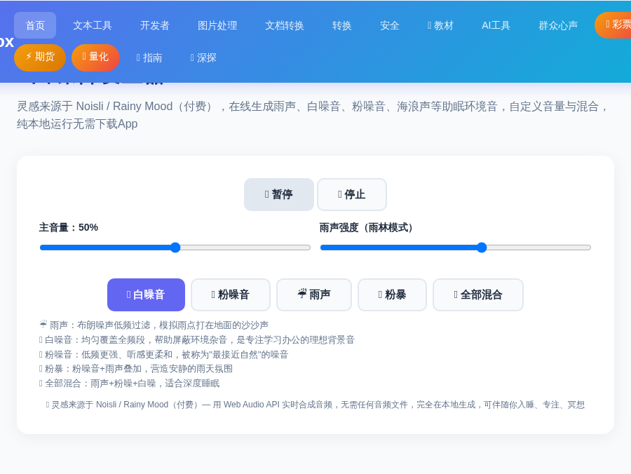

深夜睡不着、办公室太吵、图书馆里隔壁桌键盘敲得心烦……你需要一场"不会停的雨"。白噪音（White Noise）能均匀覆盖环境杂音，让人更快入睡、更集中注意力，是无数人验证过的专注与助眠神器。
以前要用这类工具，得下载 Noisli、Rainy Mood 之类的付费 App。现在用 ToolBox 的 在线白噪音发生器，打开网页就能听：雨声、白噪音、粉噪音、海浪声等多种声音自由混合，音量随意调，纯本地生成、不消耗流量、不限时长，完全免费。
进入 ToolBox 首页，点击「🎬 媒体工具」分类，找到「🎧 白噪音发生器」工具卡片进入（也可在首页搜索「白噪音」快速定位）。
点击绿色「▶️ 播放噪音」按钮，立刻就能听到默认的白噪音。整个页面会显示当前混音状态，按钮变为「⏸ 暂停」随时切换。

工具提供独立滑块，让你像调音台一样自由组合声音：
比如把雨声强度调高、白噪音调低，就能得到"安静雨夜"的效果——比单一声音更自然、更耐听。
想停下来时，点击「⏹️ 停止」按钮即可全部静音；下次打开浏览器重新进入页面，点一下播放又能继续。没有任何时长限制，也不产生任何网络流量（声音在本地实时合成）。
白噪音被大量研究证明能帮助放松与专注。这些场景直接用得上：
Q：声音会上传到服务器吗？
不会。白噪音是浏览器本地实时合成的音频，不需要联网、不产生流量，也不会上传任何数据。
Q：可以同时混合多种声音吗？
可以。工具内置独立的混合通道，雨声、白噪音、粉噪音、海浪声等可以任意组合叠加，自由调节各自的音量比例。
Q：需要下载 App 吗？完全免费吗？
不需要。直接在浏览器打开就能用，完全免费、无限时长，手机、电脑都支持（建议 Chrome/Edge 效果最佳）。
📌 现在有点吵？打开白噪音发生器，3 秒进入专注状态
🎧 去听白噪音 →